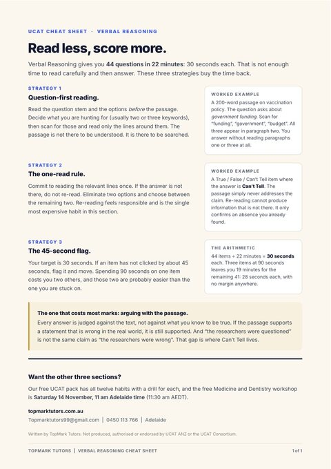

Free UCAT resource
Verbal Reasoning Cheat Sheet
44 questions in 22 minutes is 30 seconds each, which is not enough time to read carefully and then answer. Three strategies that buy the time back.
1 page • 3 strategies • 30 seconds a question • free • straight to your inbox
Free, no cost, no card
Where should we send it?
Tell us where to send it and the download opens straight away.
Unlocked. The download is open below, and a copy is on its way to your inbox.

What is inside
1 page, and what is on them.
- Question-first reading
- The one-read rule
- The 45-second flag
- A worked example for each, on one page you can print
Not produced, authorised or endorsed by UCAT ANZ or the UCAT Consortium.
UCAT Online Course
Want this taught, not just read?
Live online classes with Haseef from Saturday 5 December. The lecture class teaches the content, the workshop class works questions in a small group, and your first class is free.